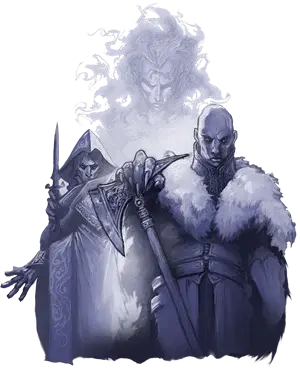

Патрина Великовна
Patrina Velikovna
Средний Гуманоид (Сумеречный эльф), нейтрально-злой, именной НИП

Класс Доспеха 12 (15 с доспехами мага)
Хиты 99 (18к8 + 18)
Скорость 30 футов
| мод | спас | ||
|---|---|---|---|
| СИЛ | 10 | +0 | +0 |
| ЛОВ | 14 | +2 | +2 |
| ТЕЛ | 12 | +1 | +1 |
| мод | спас | ||
|---|---|---|---|
| ИНТ | 20 | +5 | +9 |
| МДР | 15 | +2 | +6 |
| ХАР | 16 | +3 | +3 |
Навыки История +13, Магия +13
Сопротивление урону дробящий, колющий, рубящий
Чувства пассивное Восприятие 12
Языки любые шесть языков
Опасность 12 (8400 опыта)
Бонус мастерства +4
Особенности
Сопротивление. к урону урон от заклинаний; немагический дробящий, колющий и рубящий урон (от каменной кожи).
Сопротивление магии. Патрина совершает с преимуществом спасброски от заклинаний и прочих магических эффектов.
Использование заклинаний. Патрина является заклинателем 18 уровня. Её базовой характеристикой является Интеллект (Сл спасброска от заклинания 17, +9 к попаданию атаками заклинаниями). Патрина может неограниченно накладывать маскировку и невидимость, и у неё подготовлены следующие заклинания волшебника:
• Заговоры (неограниченно):волшебная рука, огненный снаряд, свет, фокусы, электрошок
• 1 уровень (4 ячейки):волшебная стрела, доспехи мага*, обнаружение магии, опознание
• 2 уровень (3 ячейки):обнаружение мыслей, отражения, туманный шаг
• 3 уровень (3 ячейки):контрзаклинание, молния, полёт
• 4 уровень (3 ячейки):изгнание, огненный щит, каменная кожа*
• 5 уровень (3 ячейки):конус холода, наблюдение, силовая стена
• 6 уровень. (1 ячейка):сфера неуязвимости
• 7 уровень (1 ячейка):телепортация
• 8 уровень (1 ячейка):сокрытие разума*
• 9 уровень (1 ячейка):остановка времени
*У архимага эти заклинания уже наложены перед сражением.
Действия
Кинжал. Рукопашная или дальнобойная атака оружием: +6 к попаданию, досягаемость 5 футов или дистанция 20/60 футов, одна цель. Попадание: Колющий урон 4 (1к4 + 2).
Описание
В жизни Патрина Великовна была сумеречным эльфом которая так много изучала темные искусства, что почти сравнялась по силе с самим Страдом. Она почувствовала к нему глубокую связь и попросила связать себя с ним узами брака. Страд согласился, привлеченный её знаниями и силой, но прежде чем он успел «выпить» жизнь Патрины, её собственный народ сорвал планы Страда и в акте милосердия забил её камнями до смерти. Страд потребовал тело Патрины и получил его. В конце концов она стала баньши, заточенной в башне.
Если она будет возвращена к жизни своим братом (см. «Темный дар Казимира» в разделе «Особые события» в главе 13), то Патрина, возвращаясь к жизни, становится архимагом без подготовленных заклинаний. Если у персонажей есть книга заклинаний, она любезно просит их отдать ее ей, чтобы она смогла подготовить все свои давно забытые заклинания и помочь уничтожить Страда (ложь). Если персонажи сделают это, она ответит на их доброту тем, что начнет узнавать о них как можно больше, прежде чем начать преследовать свои собственные цели.
Архимаги - это сильные (и обычно весьма старые) заклинатели, преданные изучению магических искусств. Добрые помогают королям и королевам, а злые сами являются тиранами или же стремятся стать личами. Те, кто не добрые и не злые, уединяются в башнях, где и практикуют магию, не отвлекаясь на посторонние дела.
Обычно рядом с архимагом находится один или несколько подмастерий, а жилище заполнено многочисленными магическими защитами и стражниками, отбивающими охоту вмешиваться в дела хозяина.